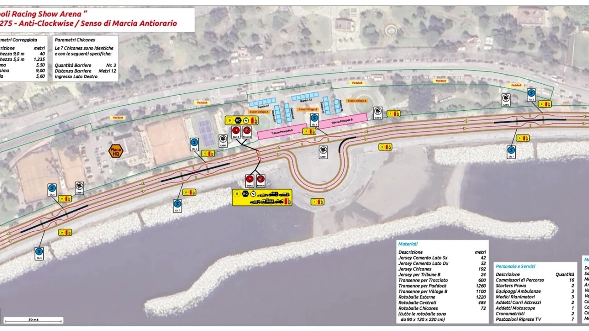

Tracciato · 1.275 m Antiorario
Via Caracciolo & Rotonda Diaz
Due rettilinei paralleli collegati dall’anello semicircolare della Rotonda Diaz fronte mare, 7 chicane con rotoballe, tornante Castel dell’Ovo, tornante Mergellina, Tribuna Principale A/B ed Event Village.